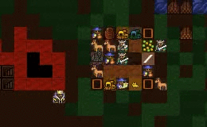
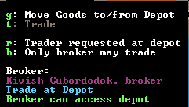
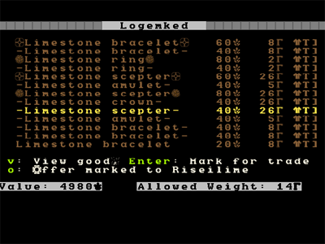

Trading for Fun and Profit¶
This will be a bit shorter, but we’re going to cover some important information, none-the-less. So stay tuned for more dwarfy goodness!
Blankets, beads, muskets and cat skull totems!¶
Trading is very important for your fortress. Every few months you’re likely to get a trade caravan and envoy arrive at your fortress looking to trade with you. They offer a wide range of goods and one of the most common things we trade back to them is crafts made from the craftsdwarf’s workshop. And the easiest crafts to trade are rock ones. Rock mugs and instruments are popular as well, so get a bunch made of all of the above when you’ve got the time.
But for the traders to visit properly they need a trade depot. This is a big structure which requires a 3-wide corridor for the trader wagons to access. Often people build them close to the fortress entrance, but there’s no reason you couldn’t build a trade depot deep inside your fortress to keep it nice and safe.
For this tutorial, we’ll just set up the depot outside. You can build it wherever you want, so long as it’s accessible to wagons!
- Hit
b,Dfor Trade Depot (remember that keys are case-sensitive, so that’sShift-d)
Now that we have the depot up we can expect to see traders turn up to
unload their goods here now and then. To trade with them you q over
the building and follow the options: g to move goods to the trade
depot, and r to request your boss dwarf to go do the trading. Once he
turns up you hit t and then enter the trade screens. Note again, do
not trade anything wooden to the elves, including wooden barrels and
bins! They will get pissy, leave, and attack you some years later!
Trading is beyond the scope of this current tutorial as there’s quite a
lot to it, but you can read a lot more about it on the Dwarf Fortress
Wiki. I suggest you make an effort to trade as trading encourages new
immigrants to come to your fortress and provides you with items you
can’t make or find yourself. Speaking of which…
Trading for fun and profit¶
At some point you’re going to get some traders turn up and with your depot up, they’ll soon make themselves at home in your depot. They’ll unload all their goods and stand around waiting for something to happen. This is how it will look when traders have arrived and unloaded:
Look at them, filling our trade depot with their mess! Lets get trading so they’ll bugger off and we can make the place all tidy again. Yes, I like things tidy in my fortress, it helps my fortress run like a well-oiled machine! So how do we gouge the visitors, I mean, trade with our friends?
Essentially, trading is a five step process:
- Set goods to be moved to the trade depot for us to trade with.
- Call the trader dwarf to the depot.
- Engage in trade.
- Deal with the trade liaison and his questions.
- Wave goodbye to the traders and enjoy your loot!
So lets get through these stages! First up, move goods. Go q over the
trade depot, and with traders in there, the options will be quite
different to what you see when it’s empty. What we’re looking for is
hitting g for Move goods to/from the depot. You’ll get
this screen:
This is a list of everything in our fortress. On the left we have item categories. In the middle, we’ve got the items themselves, and on the right, the distance from the trade depot. Looking at the distance measure you now know why some people prefer to put the depot all the way inside – remembering the 3-wide corridor or ramp all the way to the depot, of course.
Don’t worry about all of this detail for now, just scroll down to
Crafts using ↓. Once you’re there, this is what you’ll see:
What do you see? All of the crafts we’ve been making listed on the right! You’ll also notice weird symbols to the left and right of each named item, these are the quality symbols. Later on you may want to manage the quality of goods your dwarfs use, especially weapons, so knowing that ☼ == much good item, is worth remembering.
Now we want to move these goods to the trade depot so we can trade them
away. I mean really, how many Sandstone earrings do we really need?
So, hit the → to move to the item list (rather than the
category list) and then hit Enter. On the right you’ll see
Pending next to the item we’ve selected. Scroll down and
set most of the items to Pending.
At the bottom of the list you’ll see some Finished Goods bins. This
is good! Moving a single bin full of stuff is much better than moving
dozens of items one by one! How do I know there’s heaps of stuff in
those bins? I hit v with a bin highlighted!
You don’t need to select those individual items to move, selecting the bin in the menu above will move the bin and everything it contains.
Right! Once we Esc back out our dwarves will start moving the
trade goods we ordered. From here the trade depot is still
selected so lets take the chance to hit r which cycles the trader
status. It now says Trader requested at depot, which is what we’re
aiming for. The trader should now consider heading up to talk to the
traders.
With the game resumed goods are tagged to be moved and pretty soon dwarfs will start hauling goods to your trade depot. The hauling of trade goods seems to be set at quite a high priority, so it shouldn’t take long for them all to be offloaded. Of course, it would be much quicker if I had more bins, that way a dwarf isn’t wasted carrying a single earring, and we’ll have lots of wasted time with this hauling! More bins are on my to-do list.
After a minute, hit q again and move over the trade depot, you’ll see
the status of the depot. If t: Trade is grey, the trader hasn’t
got there yet. Below the menu field it tells me my trader is On
break. oh no, I lie, now he’s asleep! Hurry up dude, I’ve got crap to
offload to the visitors!
While you’re waiting, why not go and set a bunch of barrels and bins and booze to be made. You can never, ever have too much of any of that stuff!
Oh, look! The trader finally bothered to turn up to trade! See, it says Trade at Depot for his current job, and the Trade option is white and therefore, usable.
Now hit t and we’ll be taken to the trade screen, which looks like
this:
On the left, we have what the traders are offering. On the right, we
have our stuff. At this point you can start selecting stuff to trade
away. Left and right arrows move between the panels and up and down
through the list. Remember, don’t trade bins or wooden items to elves!
Not sure if they’re elves? Look at the top of the screen and you’ll see
who you’re trading with, in my case I’m trading with traders from
“Riseilime”. If I Esc back out of the trading to the main menu and
hit c I will see a list of in this world civilisations. I see that
Riseilime is an elf civilisation. I can hit Enter and learn more
about it and then Tab through more info. Interesting.
In case you’re wondering you can actually read all of the history of each of those civilisations in legends mode. There’s some crazy stuff that the game auto-generates and the detail is remarkable (like stories about dwarf children, kidnapped by goblins, who go native and in adulthood lead goblin raiding parties against dwarf cities!). But don’t worry about that for now, lets get back to trading.
Go through your list of items, and being careful not to select the wooden bins, hit enter on all those crafts.
As you can see, I’ve got lots of stuff up for trade (marked with a T). On the left bottom there it tells me how much my junk is worth, 4980! That’s a lot of loot I can get off the elves! On the right, allowed weight is 14. This number starts much higher and drops as you add goods and represents the amount of weight the traders can take away with them.
So now we’ve set a huge pile of junk for us to sell, lets pick a bunch of junk off the elves! I suggest buying food, booze, animals in cages, weapons (but not the very best ones) like steel crossbows, chainmail (steel and iron), shields, etc. But don’t stress, buy what amuses you! Oh, definitely buy a few cloth or leather bags (what seeds get stored in) and some rope (for setting up animals as guards). Type of rope or bags doesn’t really matter. So much shopping to do!
One important point! Your dwarfs can’t wear anything Narrow or Large, so don’t buy it.
Once you’ve chosen all that’s useful you should have a look at the bottom left, Trader Profit. If it’s more than a token tip you will want to un-select some of your own trade goods. No point in giving away lots of junk for free!
When you’re happy with your trading, hit t, the trade will either go
through, or you’ll get a counter offer. Enter lets you consider the
counter offer, which you can adjust down more in your favour. Hit t
again and hopefully the trade completes. Keep working at it until it
pans out. Until your trader is experienced your tip could be quite
large.
If the trade completes you will see the message [name] seems pleased
with the trading. Job done! Hit Esc to go back to the local map
and let the game resume. You don’t need to do anything else now, dwarfs
will come and haul your spoils and the traders will leave happy with
their trinkets. Even better, they will take news of your awesome
limestone mugs, earrings and bracelets back to the world and that will
attract even more immigrants. Super!
The next likely thing to happen is that the trade liaison will want to talk to you about what goods you want. Feel free to suggest to the trader items you’d like (using the arrow keys to scroll and upgrade the priority of an item). Note, the more you want the item, the higher the price they will charge when they bring it, so mild suggestions for preferred items are probably better than setting the meter all the way over to the right.
The trader will also tell you what they’re interested in getting in trade goods. The higher the priority the more they will pay for the good. I largely ignore this as, frankly, if you churn out a ton of good crafts, and trade regularly, you should have plenty of junk to trade for most things you want, let alone junk from dead invading goblins etc. If/when you do get those screens, read the screen prompts carefully, and experiment! It can’t hurt!
That’s pretty much all there is to it!